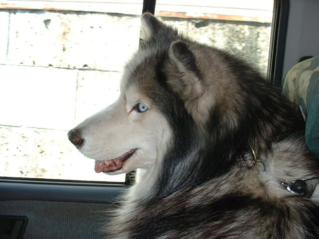

2代目事務所犬よもぎ
よもぎ；ドーベルマン・ピンシャー２歳、雌。趣味；キャッチボール、ランニング、ジャンプ、 ロープかじり。
よもぎ；3歳、山遊び。
ミー；アメリカン・ショートヘア2歳、半年くらいいてよそにもらわれて行きました。
事務所犬メリー

メリー；ハスキー 4歳、雌。趣味；グルメ、散歩、マラソン、土掘り、猫いじめ。
事務所犬メリー(2)
メリー；ハスキー 6歳、雌。趣味；グルメ、散歩、マラソン、土掘り、昼寝。
メリー：2007/2/17 急死 7才。
ホームページに戻る